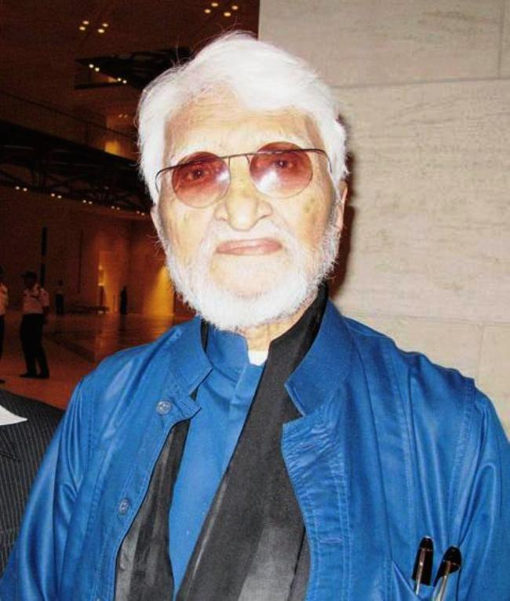

Influences
Singh was a leading figure in India’s second generation of modernists, alongside the likes of Rameshwar Broota and Jogen Chowdury. They were all born just before, or during, the Second World War and came of age in the late 1960s. ‘They weren’t a movement as such,’ Avari says, ‘but were united by their dedication to narrative painting.’
The artists arrived on the scene in the wake of the Progressive Artists’ Group, which had been founded by M.F. Husain, F.N. Souza, S.H. Raza and K.H. Ara in 1947. These figures are considered the first generation of Indian artists to have embraced modernism. [M.F. Husain’s Battle of Ganga and Jamuna: Mahabharata 12 realised $1.6 million at Christie’s New York in 2008, and S.H. Raza’s Saurashtra realised £2.4 million in 2010.]

Maqbool Fida Husain better known as M. F. Husain was an Indian artist known for executing bold, vibrantly coloured narrative paintings in a modified Cubist style. He was one of the most celebrated and internationally recognized Indian artists of the 20th century.

Francis Newton Souza (12 April 1924 – 28 March 2002) was a Goan artist. He was a founding member of the Progressive Artists' Group of Bombay, and was the first post-independence Indian artist to achieve high recognition in the West. Souza's style exhibited both low-life and high energy.